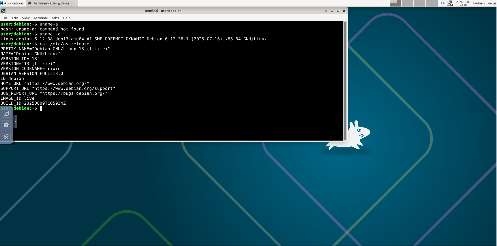

Операционные системы и программное обеспечение
Установка и настройка операционных систем, файловые системы, прикладные программы, лицензирование и обновления. В разделе работ: 27.
Сравнение операционных систем
Windows, macOS и Linux сравниваются по разработчику, устройствам, стоимости и безопасности.
| Критерий | Windows | macOS | Linux |
|---|---|---|---|
| Год выпуска | 1985 | 2001 | 1991 |
| Разработчик | Microsoft | Apple | Сообщество |
| Устройства | ПК, ноутбуки | MacBook, iMac | ПК, серверы |
| Стоимость | Платная | Бесплатная* | Бесплатная |
| Безопасность | Высокая | Высокая | Высокая |
* macOS бесплатна для владельцев устройств Apple.
Системные требования операционных систем
Минимальные требования, которые нужно проверить до установки каждой системы.
| Критерии | Windows 11 | macOS | Ubuntu Linux |
|---|---|---|---|
| Процессор | 1 ГГц, 2 ядра | Apple / Intel | 2 ГГц, 2 ядра |
| ОЗУ | 4 ГБ | Зависит от Mac | 4 ГБ |
| Место на диске | 64 ГБ | Зависит от Mac | 25 ГБ |
| Видеокарта | DirectX 12 | Совместимая с Mac | Поддержка 3D |
| Тип устройства | ПК, ноутбук | MacBook, iMac | ПК, ноутбук |
Подготовка к установке операционной системы
Семь шагов подготовки компьютера к установке.
- Проверка совместимости с системными требованиями.
- Резервное копирование важных файлов.
- Проверка оборудования (диск, ОЗУ).
- Скачать ISO с официального сайта.
- Создать загрузочную флешку.
- Настроить BIOS/UEFI - выбрать USB.
- Запустить установку.
Способы установки операционной системы
Шесть способов установки с плюсами и минусами каждого.
| Способ | Описание | Плюсы | Минусы |
|---|---|---|---|
| USB-флешка | С загрузочной флешки | Быстро, удобно | Нужно подготовить флешку |
| DVD-диск | С установочного диска | Простой способ | Нужен DVD-привод |
| Через интернет | Загрузка из сети | Не нужен диск | Нужен стабильный интернет |
| По сети (PXE) | С сетевого сервера | Для многих ПК | Нужна настройка сервера |
| Восстановление | Из резервной копии | Сохраняет настройки | Нужна заранее созданная копия |
| Виртуальная машина | Внутри программы | Несколько ОС на одном ПК | Требует ресурсов |
Создание загрузочной флешки
Как записать установочный образ Windows на флешку.
Нужно: ПК с интернетом, USB от 8 ГБ, Media Creation Tool.
- Вставить флешку и сохранить с неё важные файлы.
- Скачать Media Creation Tool с сайта Microsoft.
- Запустить, принять условия, выбрать язык и версию Windows.
- Выбрать «USB-устройство флэш-памяти» и свою флешку.
- Дождаться записи и безопасно извлечь флешку.
Во время записи нельзя вытаскивать флешку.
Параметры BIOS и UEFI
Настройки BIOS/UEFI, которые влияют на установку системы.
- Boot Priority - порядок загрузки (для установки выбрать USB).
- Boot Mode - UEFI или Legacy BIOS.
- Secure Boot - защита от непроверенных программ.
- USB Boot - разрешает загрузку с USB.
- SATA Mode - AHCI или RAID.
- TPM 2.0 - нужен для Windows 11.
- Fast Boot - ускоряет запуск, иногда мешает загрузке с флешки.
- Date and Time - дата и время.
Файловые системы
Файловые системы сравниваются по назначению, плюсам и ограничениям.
| ФС | Где используется | Плюсы | Минусы |
|---|---|---|---|
| FAT32 | Флешки, карты памяти | Работает везде | Файлы не больше 4 ГБ |
| NTFS | Windows, диски | Надёжная, большие файлы | Слабая поддержка другими ОС |
| exFAT | Флешки, внешние диски | Большие файлы, Windows + macOS | Меньше функций защиты |
| ext4 | Linux | Надёжная, быстрая | Windows без доп. программ не читает |
| APFS | macOS | Хороша для SSD, шифрование | В основном только Apple |
Установка Windows
Порядок установки Windows с загрузочной флешки.
- Подготовить загрузочную флешку и сохранить важные файлы.
- Вставить флешку → Boot Menu (F2 / F12 / Del / Esc) → выбрать USB.
- Выбрать язык → «Установить» → ключ (если есть) → версию ОС.
- Принять лицензию → «Выборочная» → выбрать диск.
- Дождаться окончания, настроить систему, установить драйверы.
Не выключайте ПК во время установки. Используйте только официальный образ.
Сравнение Ubuntu и Linux Mint
Два популярных дистрибутива Linux сравниваются по основе, интерфейсу и требованиям.
| Характеристика | Ubuntu | Linux Mint |
|---|---|---|
| Разработчик | Canonical | Linux Mint Team |
| Основа | Debian | Ubuntu / Debian |
| Интерфейс | GNOME | Cinnamon |
| Удобство | Современный | Похож на Windows |
| Производительность | Больше ресурсов | Есть лёгкая версия Xfce |
| ОЗУ | От 6 ГБ | От 2 ГБ (рек. 4 ГБ) |
| Стоимость | Бесплатная | Бесплатная |
Первоначальная настройка операционной системы
Что настраивают сразу после установки системы.
- Язык и регион.
- Дата и время.
- Подключение к интернету.
- Создание учётной записи.
- Настройки конфиденциальности.
- Установка драйверов.
- Обновление системы.
- Установка нужных программ.
- Настройка рабочего стола.
- Проверка работы устройств.
Создание учётной записи пользователя
Как добавить нового пользователя в Windows.
- Пуск → Параметры → Учётные записи → Другие пользователи.
- «Добавить учётную запись».
- Выбрать Microsoft или локальную учётную запись.
- Ввести имя, пароль и контрольные вопросы.
- При необходимости сделать администратором.
- Выйти и войти в новую учётную запись.
Основные драйверы
Какие драйверы нужны компьютеру и за что отвечает каждый.
- Видеокарта - изображение и графика
- Звуковая карта - колонки, наушники, микрофон
- Сетевая карта (LAN) - интернет по кабелю
- Wi-Fi - беспроводная сеть
- Чипсет - работа материнской платы
- Bluetooth - беспроводные устройства
- USB - порты и устройства
- Принтер и сканер
Работа с Debian в DistroSea
Запуск Debian в браузере и проверка версии системы командами терминала; каждый шаг показан на скриншоте.
-
Открыть браузер → найти distrosea.com и выбрать Debian.

-
Выбрать доступную версию Debian.

-
Нажать Start и дождаться рабочего стола XFCE.

-
Открыть Applications → Terminal Emulator.

-
Выполнить команды:
uname -a
cat /etc/os-release
- Ознакомиться с информацией и завершить сеанс.
Драйверы и версия операционной системы
Результат проверки драйверов и версии Windows на учебном компьютере.
| Компонент | Версия | Назначение | Проблемы |
|---|---|---|---|
| Драйвер NVIDIA | 26.21.14.4292 | Работа видеокарты | Обновить / переустановить |
| Realtek Ethernet | 10.36.701.2019 | Сеть | Переустановить драйвер |
| NVIDIA HD Audio | 1.3.38.21 | Звук по HDMI | Проверить настройки |
| Intel ME Interface | 1914.12.0.1256 | Функции Intel | Драйвер с сайта |
| SATA AHCI | 10.0.19041.3636 | Диски SATA | Проверить кабели |
| NVMe | 10.0.19041.4355 | NVMe SSD | Проверить накопитель |
| Windows 10 Pro | 22H2 (19045) | Управление системой | Обновления, sfc /scannow |
Установленные программы на учебном компьютере
Список найденных программ с версиями и назначением.
| Программа | Версия | Назначение |
|---|---|---|
| Microsoft Office LTSC 2021 | 16.0.14334 | Документы, таблицы |
| AIDA64 Extreme | 8.00 | Диагностика ПК |
| WinRAR | 7.23 | Архивы |
| Python | 3.12.3 | Программирование |
| MySQL Server | 8.0.35 | Базы данных |
| MySQL Workbench | 8.0.34 | Управление БД |
| Sublime Text | 3 | Редактор кода |
| Inkscape | 1.4.3 | Векторная графика |
| OneDrive | 26.158 | Облако |
| Java | 8 Update 503 | Запуск Java-программ |
| SolidCAM | 2022 | CAD / обработка |
| Team Fortress 2, Unturned, ETS2 Demo | - | Игры |
Установка прикладных программ
Общий порядок установки прикладных программ.
- Проверить требования и совместимость.
- Проверить свободное место.
- Скачать с официального сайта.
- Запустить от имени администратора.
- Выбрать компоненты и дождаться установки.
- Перезагрузить при необходимости.
- Активировать, настроить, обновить.
- Проверить работу на тестовом файле.
Подготовка к установке Microsoft Office
Что проверить и подготовить перед установкой Office.
- Проверить системные требования (обычно 64-бит, 2–4 ГБ ОЗУ).
- Определить разрядность системы.
- Убедиться в правах администратора.
- Освободить место и закрыть приложения.
- Сделать резервную копию документов.
Программы для работы с PDF
Пять программ для работы с PDF и их особенности.
| Программа | Функции | Особенности |
|---|---|---|
| Adobe Acrobat Reader | Просмотр, печать, формы, подпись | Популярная |
| Foxit PDF Reader | Просмотр, комментарии, подпись | Удобный интерфейс |
| PDF-XChange Editor | Редактирование, объединение | Много инструментов |
| SumatraPDF | Просмотр и поиск | Быстрая и лёгкая |
| Microsoft Edge | Просмотр, печать | Уже установлен |
Программы для видеоконференций
Пять сервисов для видеосвязи с основными функциями.
| Программа | Функции | Особенности |
|---|---|---|
| Zoom | Звонки, чат, запись, экран | Удобна для учёбы |
| Microsoft Teams | Видео, переписка, файлы | Работа и учёба |
| Google Meet | Звонки, экран, субтитры | В браузере |
| Skype | Звонки, сообщения, файлы | Личное общение |
| Cisco Webex | Конференции, запись | Деловые встречи |
Программы для аудио и видео
Программы для работы со звуком и видео, сгруппированные по назначению.
Аудио: Audacity, Adobe Audition, FL Studio, AIMP, REAPER.
Видео: Adobe Premiere Pro, DaVinci Resolve, CapCut, Shotcut, OBS Studio, VLC.
Восстановление работы приложения
Что делать, если приложение работает неправильно: от простых действий к радикальным.
- Закрыть и снова запустить приложение.
- Перезагрузить компьютер.
- Проверить обновления приложения и Windows.
- Проверить приложение антивирусом.
- Параметры → Приложения → «Исправить».
- Сбросить настройки или переустановить.
Ошибки при установке программ
Десять типичных ошибок установки с причинами и способами устранения.
| № | Ошибка | Причина | Устранение |
|---|---|---|---|
| 1 | Недостаточно места | Мало места на диске | Освободить диск |
| 2 | Повреждён файл | Ошибка скачивания | Скачать заново |
| 3 | Несовместимость | Не подходит версия Windows | Совместимая версия |
| 4 | Ошибка драйверов | Устаревшие драйверы | Обновить драйверы |
| 5 | Нет прав | Нет прав администратора | Запуск от администратора |
| 6 | Нет интернета | Нестабильное соединение | Проверить сеть |
| 7 | Установка зависает | Сбой или конфликт | Перезагрузить ПК |
| 8 | Антивирус блокирует | Файл как угроза | Проверить файл |
| 9 | Мало ресурсов | Слабый ПК | Проверить требования |
| 10 | Неправильный раздел | Ошибка выбора диска | Проверить разделы |
Лицензионное и нелицензионное ПО
Сравнение по семи критериям: законность, безопасность, поддержка и другие.
| Критерий | Лицензионное | Нелицензионное |
|---|---|---|
| Законность | На законных основаниях | Нарушает лицензию |
| Стоимость | Платное или бесплатное | Часто бесплатно |
| Обновления | Официальные | Могут отсутствовать |
| Безопасность | Проверяется разработчиком | Может содержать вирусы |
| Поддержка | Есть | Обычно нет |
| Надёжность | Предсказуемая | Возможны сбои |
| Активация | Официальный ключ / аккаунт | Незаконный активатор |
Установка лицензионного ПО
Как установить программу законно и проверить активацию.
- Найти официальный сайт разработчика.
- Выбрать и скачать программу.
- Проверить файл антивирусом.
- Установить, принять лицензию.
- Ввести ключ или войти в аккаунт.
- Проверить активацию.
Что делать, если нет лицензии
Безопасная альтернатива: официальные бесплатные и пробные версии.
- Определить нужную программу.
- Найти бесплатную или пробную версию на официальном сайте.
- Скачать, проверить антивирусом и установить.
- Настроить и проверить работу.
Использование взломанных активаторов может привести к заражению компьютера и потере данных.
Зачем обновлять программное обеспечение
Причины регулярно обновлять программы и систему.
- Устранение ошибок
- Закрытие уязвимостей
- Защита от новых вирусов
- Улучшение производительности
- Новые функции
- Совместимость с современными устройствами
- Повышение стабильности
Очистка папки от ненужных файлов
Разбор папки с файлами: что можно безопасно удалить и почему.
- LegacyLauncher, Setup.3.5.0.exe - лаунчер игры, не используется для работы
- WhatsApp installer.exe - установщик, после установки можно удалить
- Gemini_Generated_Image_*.jpg/png - временные ИИ-изображения
- RobloxPlayerInstaller.exe - установщик игры
- index.html, game number.html, wonders-of-the-world.html - старые работы
- LegacyLauncher.torrent - загрузочный файл игры
- NCALayerInstall_x64.exe - установщик ПО
- 7_chudes_prostoy_kod.zip, 7_chudes_sveta_site.zip - старые работы
- AstralRinth-beta.zip, config.zip - игровые архивы
- загрузка.jpg, WhatsApp Image … .jpg - временные медиа